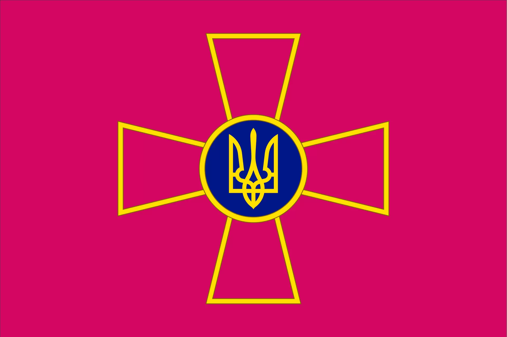

Слава Україні!
Мене звати Василь.
Мені 20 років, я студент.

Інформація про мене:
- Студент
- Закінчив технічний коледж ТК ТНТУ:
- Спеціальність: 123 Комп'ютерна Інженерія
- Форма навчання:очна
- Період навчання 2018-2021(4 роки)
- Навчаюсь в технічному університеті ТНТУ:
- Спеціальність: 123 Комп'ютерна Інженерія
- Форма навчання:очна
- Період навчання з 2022(ще навчаюсь)
- Дуже не люблю москалів, тому намагаюсь підтримувати нашу армію.
- Роблю це у вигляді донатів на один із цих фондів:
Чому обрав саме цей курс?
Знайшов Ваш безкоштовний курс на Youtube каналі "Фрілансер по життю" .Після чого почав
активно його дивитись, паралельно практикуючись зі створення власних односторінкових веб-сайтів.
Ось один з макетів зверстаних на безкоштовному курсі:
Сорі за якість зображення(.
Дякую ЄВГЕНУ за цей курс, а також МЕНТОРАМ які будуть дивитись цей "красивий сайт"